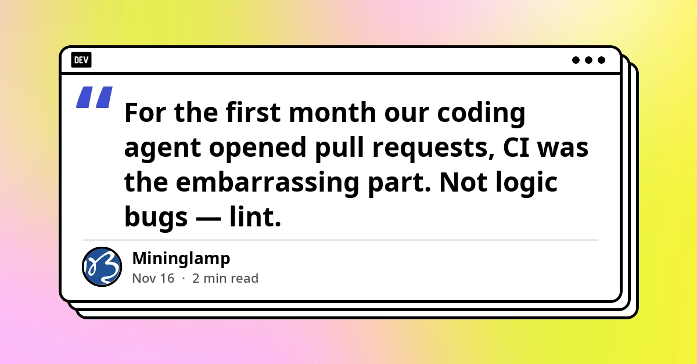
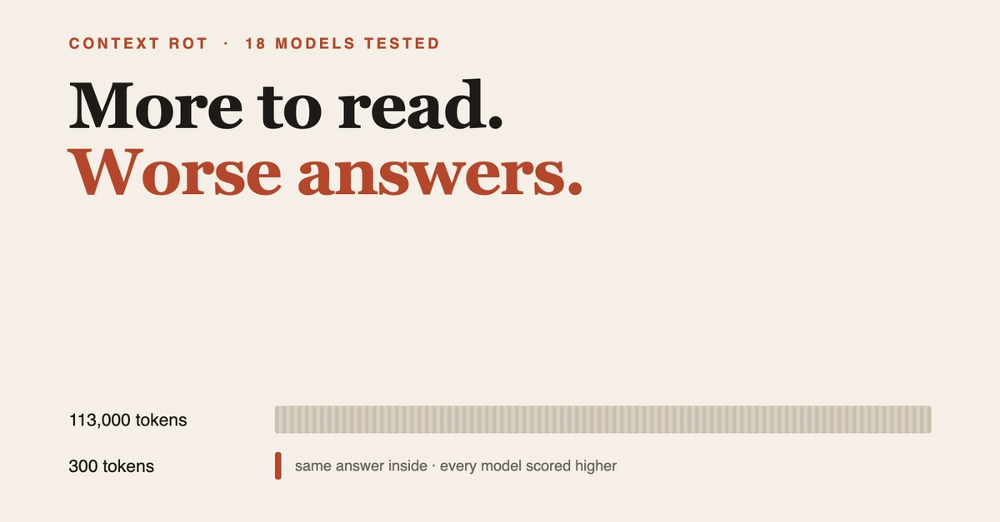
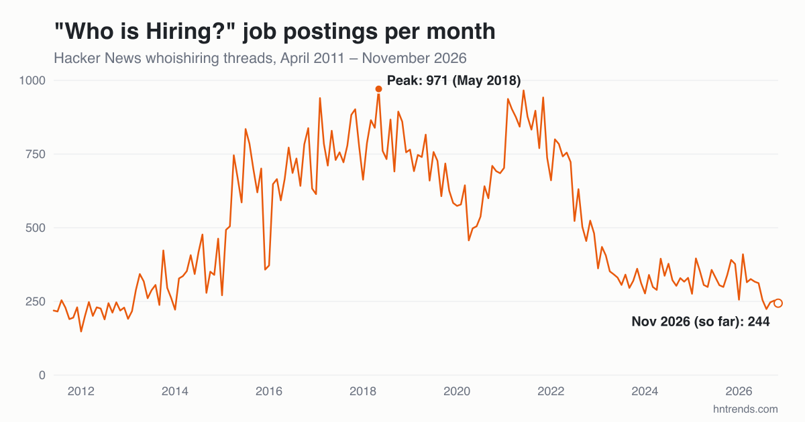
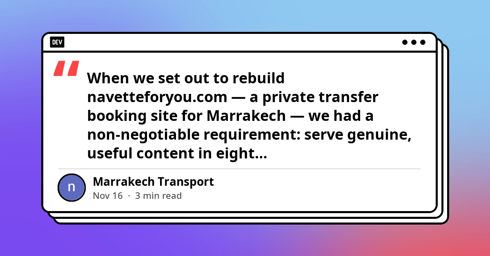
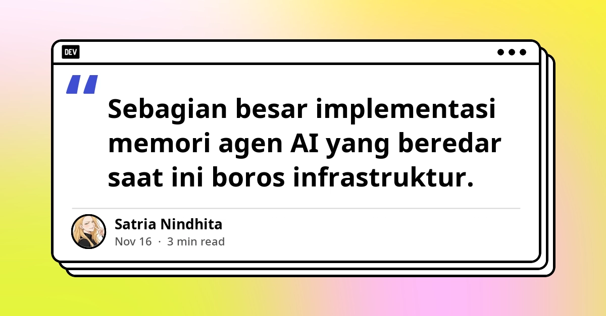
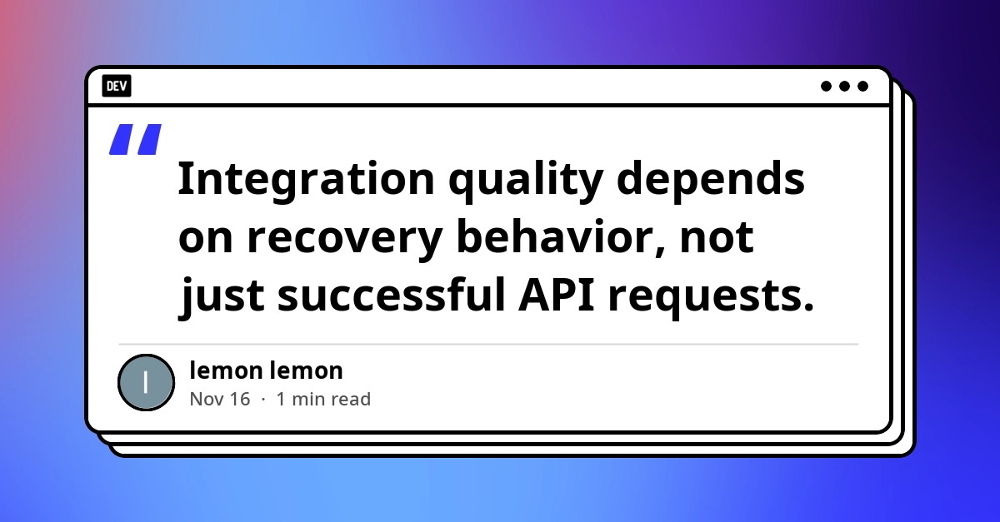
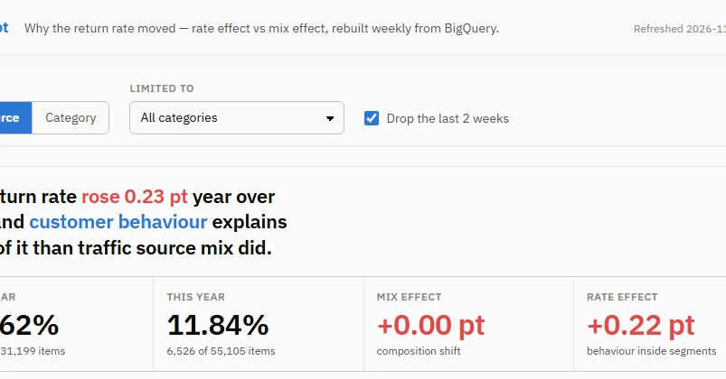
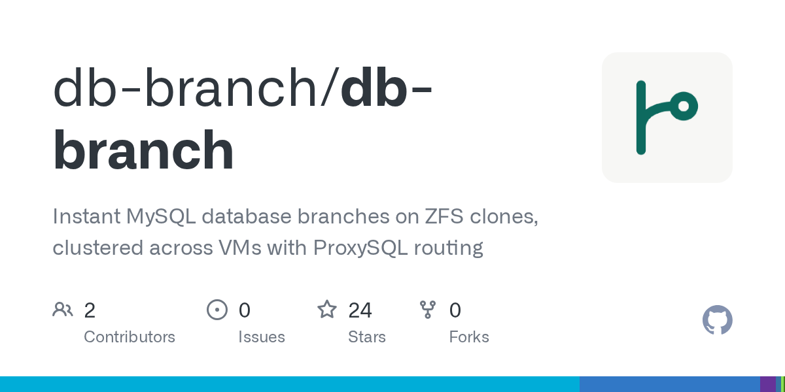
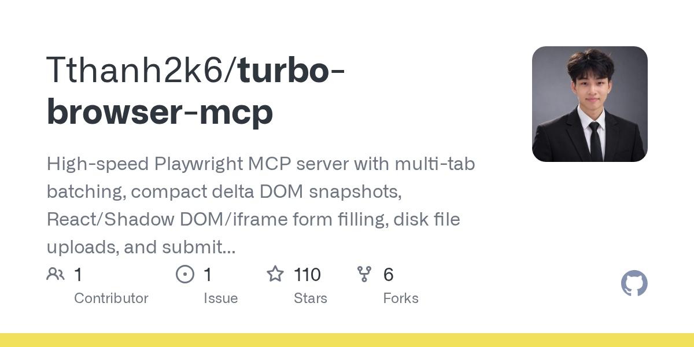
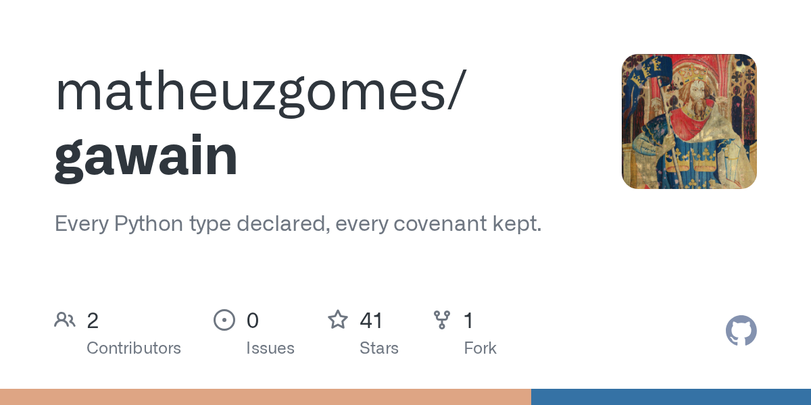

🔥 Top 3 (must read)
After Months of Use, Our Agent Passes Our Lint Rules
A team's coding agent sent PRs through the same CI gate as humans (ESLint, Ruff, pre-commit). For the first month, most red builds were lint errors, not logic bugs. By about month three, the agent's PRs were passing lint, even though nobody retrained it or changed the config. Why it matters: this is a real story about adopting AI in a team. The lesson is to put agent code through the same quality gates as human code from day one.

18 AI Models Were Given More to Read. All 18 Got Worse.
Context windows now go up to a million tokens. But four studies suggest a model can only use a much smaller part of that well. What you leave out matters more than what you put in. Why it matters: if you use Claude Code or other agents every day, you should keep CLAUDE.md files, prompts and tool output short and focused. Don't dump everything in.

"Who is Hiring?" postings stuck near 12-year lows as AI reaches half of all jobs
(HN discussion) The number of job posts in HN's monthly "Who is Hiring?" thread is still near its lowest level in 12 years. About half of the posts now mention AI. Why it matters: as an EM, this tells you about the hiring market. Expect a large pool of candidates, and AI skills are quickly becoming a normal requirement.

🛠 Tools & releases
datasette 1.0a43
: adds streaming support for output renderers. The 1.0 milestone is now 53% done. There is also a security backport in 0.65.6: a database whose route is different from its name could be downloaded by users who were denied access.
S
datasette-apps 0.4a0
: sandboxed HTML/JS apps that can run SQL on your data (like Claude Artifacts). Apps can now be linked with URL
#fragments.S
Multilingual Astro sites with zero JavaScript
: a real site serves 8 languages (Arabic RTL included) with static routing only.

🤖 AI for developers
Simon Willison uses Claude Fable 5.2 to push Datasette toward 1.0
: a real example of one maintainer moving a long milestone forward quickly with an AI assistant.
S
datasette-agent 0.6a0
: an agent prompt is now on the Datasette homepage. You can use
#mentions to point it at tables and queries. This is a useful pattern for "ask your data" UIs.S
Persistent agent memory: SQLite FTS5 to cloud LibSQL
: one way to give an agent long-term memory. It starts with local full-text search and later moves to a hosted database.

👔 Engineering & teams
Five failure scenarios to test before an API launch
: a short checklist (expired tokens, duplicate requests, timeouts with unknown results, and more). It works for any payment or wallet-style API, not only sportsbooks.

Self-refreshing dashboard on Google Cloud for ~$1/year
: one HTML file in a storage bucket, rebuilt by a scheduled job. No server and no BI license.

🎯 For me
Agent + lint story (Top 3): use it as a model for your team's AI-in-CI policy.
Context-size study (Top 3): it affects how you set up Claude Code context for the team.
db-branch (below): fast database copies for E2E tests in CI. This fits your automation-testing work directly.
API failure-scenario checklist: good input for your test strategy on payment and entitlement APIs.
💡 App ideas & indie builds
db-branch
: makes a full database branch (a copy you can throw away) in seconds using ZFS snapshots. Problem: every CI run or AI agent needs a clean, real database, and setting one up is slow. Inspiration: a "throwaway environment in seconds" tool for test pipelines.

Turbo-Browser-MCP
: an MCP browser server with batch form filling, DOM deltas (it sends only what changed on the page) and guards before submit. Problem: browser agents are slow, use many tokens, and can submit forms by mistake. Inspiration: small, focused tools that make agents faster and safer.

Gawain
: a linter that requires type hints on every Python variable. Problem: teams want stricter typing than mypy forces. Inspiration: a strict, opinionated rule tool can start a big discussion (54 comments).

Umbrella
: a macOS app that records audio from any single app. Problem: recording just one app's sound (a call, a browser tab) on a Mac is still hard. Inspiration: a small desktop app that fixes one annoying OS gap.
U
The Last Complication
: a puzzle game about building watch mechanisms, in the style of Zachtronics games. Problem: players who like engineering want puzzles where they build systems. Inspiration: a niche hobby turned into a game.
🎓 Try this
Try db-branch in one CI job. Give each E2E test run (or each coding-agent session) its own database branch, instead of running shared seed scripts. Then compare how long setup takes and how often tests fail randomly, before and after.